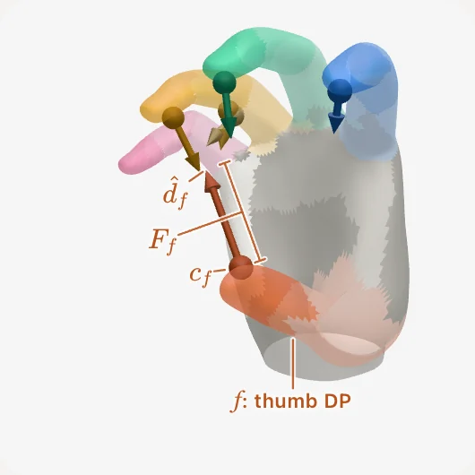
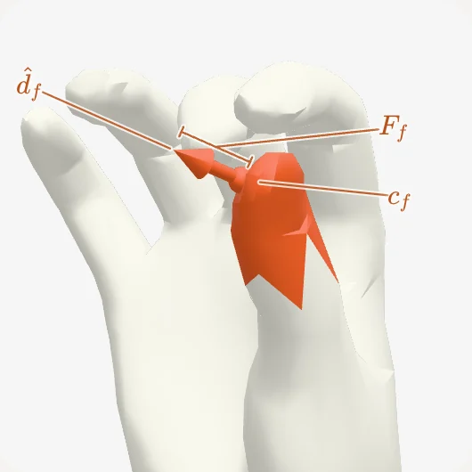
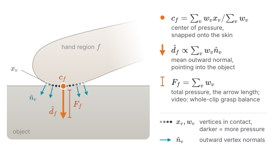
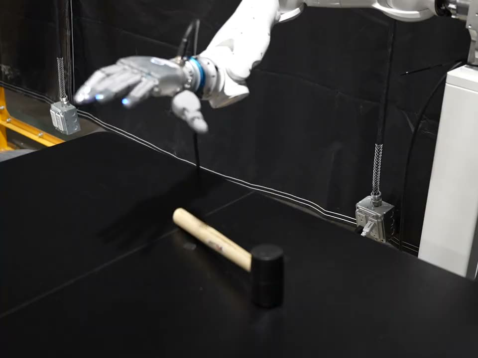
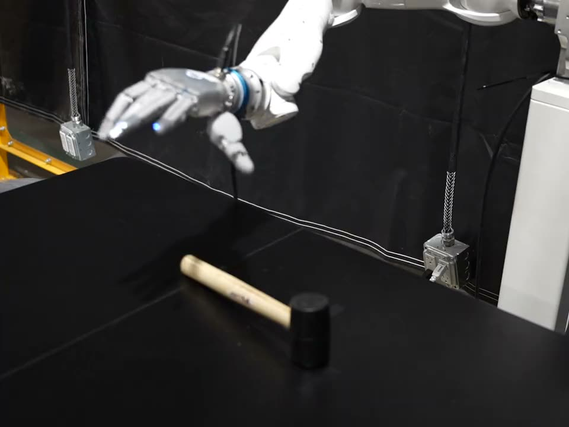

Human demonstration
Any recording that provides hand pose and contact can be used.
CARD extracts, preserves, and tracks contact force targets from human demonstrations.
Humans are dexterous, but traditional data collection paradigms such as teleoperation, kinesthetic teaching, and wearable exoskeletons force humans to act through the robot embodiment, bottlenecking their dexterity. Retargeting can avoid this. However, existing methods purely translate kinematics and ignore the real-world contact dynamics essential for task success. We present CARD: Contact-Anchored Retargeting for Dexterous Manipulation, a simulator- and object-free framework that retargets human demonstrations to robot actions by explicitly preserving contact force targets. CARD unifies human data sources including video, motion capture, and tactile gloves via a shared hand–contact representation and generates explicit contact force targets in addition to kinematics. To maintain these contact targets during open-loop replay on hardware, CARD also introduces a tactile tracking controller. For video without an explicit tactile source, we present Vid-HACO, our video-to-contact model that sets a new state of the art. Across 167 sequences from these data sources, CARD maintains contact on 43% of frames, while kinematic and object-aware retargeting methods maintain contact on under 5% and 22.5% of the frames, respectively. Further, integrating our formulation into physics-based retargeting improves strict task success from 12% to 32% on GRAB. Finally, we show that our tactile tracker is critical to reproduce demonstrated forces during hardware replay. These results establish that contact preservation via CARD is a scalable interface for transferring human dexterity to robots.
Kinematic retargeting maps fingertip positions or joint angles from the human hand to the robot hand. Differences in hand size and kinematics leave the robot links a median 20–25 mm from the demonstrated contacts, so a replayed grasp hovers, slips or crushes the object. CARD instead preserves each contact’s location, push direction and force, and places the corresponding robot link on it.
A demonstration is reduced to contact force anchors on the hand (1–2). For every frame, a closed-form initialization and a sampling-based optimization place the robot hand on those anchors (3–4), and a tactile tracking controller replays the result (5).
Any recording that provides hand pose and contact can be used.
Every source becomes a MANO hand mesh sequence with fixed semantic regions (three per finger, plus the palm) and at most one contact force anchor C_f=(c_f,\hat d_f,F_f) per region and frame: a position, a push direction and a force magnitude. Anchors are attached to the hand surface rather than to the object, so no object model is needed.

regions and anchors
thumb-tip anchor
Finger flexion and abduction are transferred from the human skeleton in closed form, the thumb through a fixed affine map of its bone directions and pad normal, and the wrist pose is set so the robot fingertips align with the human’s. No optimization is involved.


For every frame, CARD solves for the wrist pose and joint angles q:
E_{\mathrm{contact}} places each anchored robot link on its contact force target with the pad normal inside the friction cone of the push; the other terms keep fingers without contact close to the human pose, keep consecutive frames smooth and prevent collisions.
CARD minimizes this non-smooth objective with an annealed cross-entropy method (CEM) sampler on the GPU. Each frame starts midway between the previous frame’s solution and its own geometric initialization, which carries the fingertip placement.
Retargeting outputs joint targets and, for each finger in contact, a desired normal force along the push direction. During replay the arm follows the retargeted wrist. For each finger, an admittance loop on the error between the desired and the measured fingertip force closes the finger beyond its joint target until the force is reached, and a feedforward torque adds the desired force directly. The joints stay compliant, so the extra closure acts as a bounded squeeze.
Three-finger grasp during the mustard-bottle pick-up replay, with step targets of 9.7, 7 and 2.6 N (thumb, middle, index): the forces reach their set-points within a second of the step, the thumb overshoots while the bottle settles, and release returns every finger to zero within about a second.
Each source measures hand pose and contact differently. All three end as the same anchored MANO sequence, so one set of solver weights serves them all.


Vid-HACO predicts per-vertex hand contact from 8-frame video clips with a V-JEPA 2.1 encoder, trained on 1.55M frames from 12 datasets. On held-out HRDexDB it raises vertex F1 from 63.3 to 67.2 and average precision from 54.3 to 72.2 over the image-based HACO, and it rarely reports contact when the hand touches nothing.
Toy assembly from WGO-Bench, right hand. HACO reports contact on every frame; Vid-HACO’s contact drops each time the hand lets go of one part to reach for the next. Both models see the same frames and tracked hand crops, thresholded at 0.52 with no smoothing.
HACO-R is HACO retrained on the same 12 datasets as Vid-HACO. Frame F1 scores whether a frame is in contact at all; flagging every frame scores 86.1 and 75.9.
167 demonstrations retargeted to the SHARPA Wave: our 67 clips (video, glove, motion capture) and 100 GRAB clips. A contact is established when the anchor lies within 2 mm of the assigned link and is reached with its palmar face.
Not measured on our clips: the video and glove demonstrations have no ground-truth object mesh.
| CARD | DexPilot | AnyTeleop-K | AnyTeleop-P | ReGrind (w/ object) | CARD (init only) | |
|---|---|---|---|---|---|---|
| Our 67 clips (video, glove, motion capture) | ||||||
| Contact rate (%) | 43.6 | 2.5 | 2.5 | 2.4 | – | 25.2 |
| Correct finger (%) | 41.3 | 2.5 | 2.5 | 2.4 | – | 23.9 |
| In cone (%) | 18.3 | 1.0 | 1.1 | 1.3 | – | 5.7 |
| Gap, median (mm) | 3.31 | 24.23 | 24.55 | 25.06 | – | 11.52 |
| GRAB (100 clips) | ||||||
| Contact rate (%) | 43.1 | 4.9 | 4.9 | 4.6 | 22.5 | 19.6 |
| Correct finger (%) | 40.6 | 4.8 | 4.9 | 4.5 | 20.7 | 17.8 |
| In cone (%) | 16.2 | 1.7 | 1.7 | 1.7 | 5.2 | 3.8 |
| Gap, median (mm) | 3.56 | 20.90 | 20.45 | 20.66 | 7.86 | 13.78 |
| Penetration, median (mm) | 7.96 | 12.71 | 12.79 | 13.02 | 9.80 | 11.15 |
ReGrind takes the object mesh as input, so it runs on GRAB only. CARD uses a contact hull as the collision object there, and the GRAB mesh only to score penetration.
CARD-physics builds on SPIDER, a simulation-based retargeting method: it starts from CARD’s trajectories, replaces SPIDER’s contact-guidance term with E_{\mathrm{con}} and uses CARD’s contact force targets. Strict task success with ground-truth object trajectories:
A 7-DoF arm follows the retargeted wrist and the hand tracks the joint and force targets. Open-loop means no object pose estimate and no learned policy; the only feedback is the fingertip force loop.
The retargeted trajectory carries, for each finger, a contact flag and a desired normal force for the tactile tracker. Thumb and index switch on together as the thumb slides under the card, hold it while the card is lifted and turned, and release as it is laid face-up; middle, ring and pinky carry no target.
The panel shows the targets the tracker follows; fingertip forces were not logged for this run.
Identical CARD trajectories replayed on the SHARPA Wave with the force loop and with position control only, 10 trials per task. Position-only replay succeeds on 1/10 hammer lifts, 3/10 cup lifts and 0/10 mustard dispenses; with the tracker, on 8/10, 10/10 and 7/10.


Red spans on each timeline mark where the run without the tracker fails. The two card runs replay the same trajectory at different speeds (about 0.7× and 1×), so they line up only at the start.
The fingertips hold a block against a wooden barrel at about 1 N each, while either the surface or the hand moves.
Each human hand region maps to a robot link and its grasping face; the anchors, costs and weights stay the same. Even a parallel-jaw gripper keeps the grasp structure and contact timing.
@misc{card2026,
title = {{CARD}: Contact-Anchored Retargeting for Dexterous Manipulation},
author = {Anonymous Authors},
year = {2026}
}